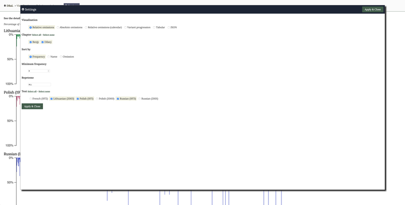
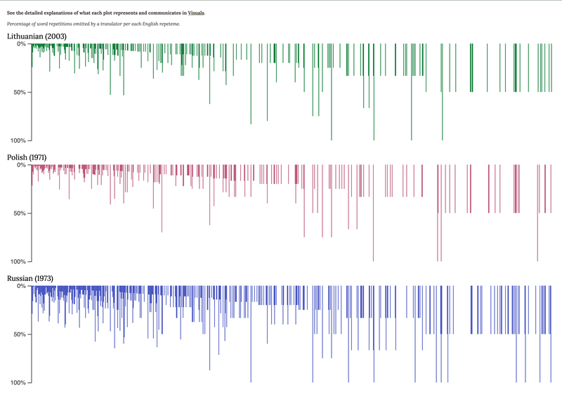
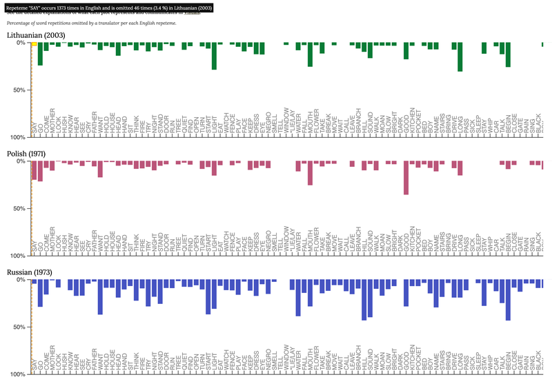
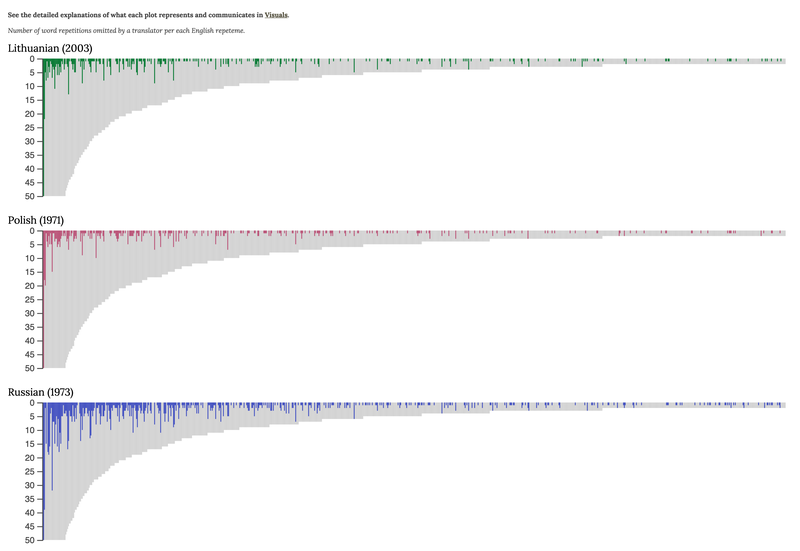
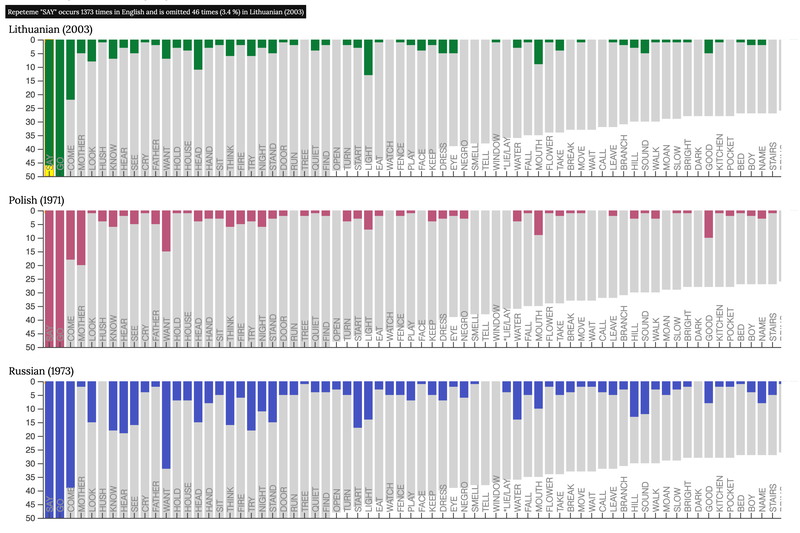
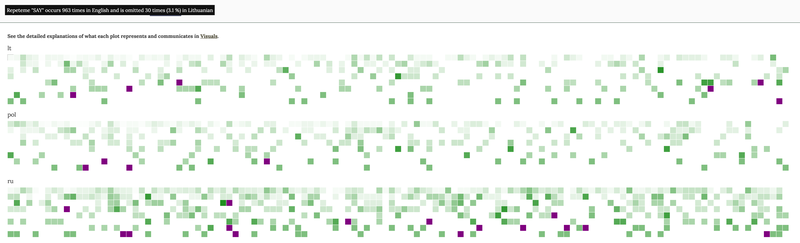
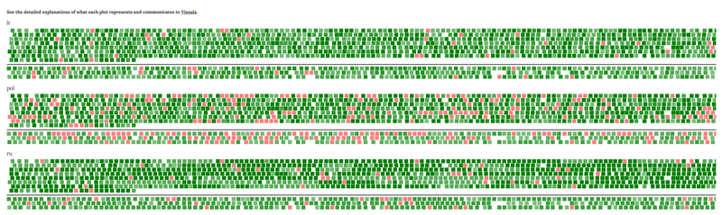
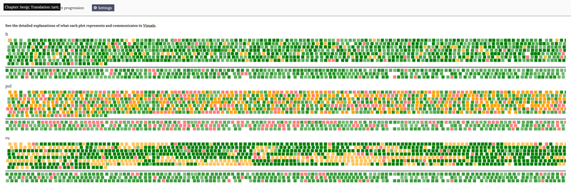
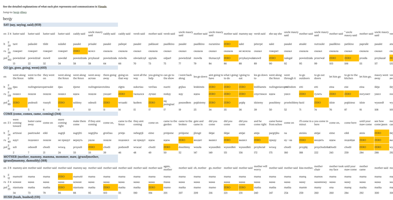

Visuals explained
Dataset Repeteme Bibliography Team
This page describes the visuals (see Visualisations) produced by computing the datasets collected from the first and fourth chapters of Faulkner's The Sound and the Fury, also known as the Benjy and Dilsey chapters, respectively. Except for the visual of variant progression, they represent the distribution of omissions as well as idiosyncratic patterns of fluctuation that illustrate differences in translatorial response.
The project was experimental and resulted in a proof of concept in need of further research, design, development, and testing. Therefore, this website features only one visualisation (i.e. ‘Relative Omission’) with the associated JSON export as the main deliverable and presents three other visualisations which were only explored during the development’s iterations, but not refined due to the limitations of time and budget. The data and code of the exploratory visualisations should not be used as reference.
RELATIVE OMISSIONS (featured)
The bar plots are designed to represent the distribution of relative omission in each translation. These visuals are modelled on the concept and plots of relative omission produced in the PI's thesis (see p. 92-93). Relative values are calculated as a ratio of the total number of omissions made in a translation to the total of the instances that make up an original repetition string. Blank spaces along the x-axis also represent repetemes. The absence of a bar in colour means that no instance of a repeteme has been lost in a translation.
The frequency range of repetitions found in the original novel is plotted along the x-axis. In the database (see Tabular), those repetitions are represented by repetition strings as the physical expressions of repetemes, while the labels on the graph are only repeteme pointers. Along the frequency range on the x-axis, the repetition strings are plotted in a sequential manner from the highest to the lowest value, which is the number of repetitions per string, and from the left side to the right side in the same numerical order as they appear in the database.
The y-axis here is an accurate representation of the level of relative omissions. The graphs summarise the frequencies of omission counted in the translations of two out of four chapters of The Sound and the Fury – that is, the Benjy and the Dilsey chapters. It is possible to view the distribution of omissions by chapter by selecting the name of a narrator in Settings.
Fig. 1 Available visualisation settings.
The graphs of relative omission reveal a very different pattern of dynamism in response to repetition that is not obvious in the visualisation of the raw counts of omission (see Absolute omissions). The distribution of omission by relative values allows us to explore the underlying patterns of intensity with which translators omit repetitions along the frequency range as well as the amplitude of where omissions appear to be most intense. The findings also counter the mainstream belief about repetition in translation that the higher the frequency, the more likely it is that translators will lose it. The frequency of repetition input that comes from reading the original text is likely to correlate negatively with the intensity of repetition loss in translation. That is, the less frequent the repetition, the more intense is its loss in translation. And the higher the frequency of a repeteme, the less likely it is to be lost completely in translation. This strongly suggests that frequencies need to be analysed along with other parameters of how repetitions are used in literature, such as distance among repetition instances, and their semantic content.
Fig. 2 Relative omissions visualisation displaying overview of word repetitions omitted by Lithuanian (2003), Polish (1971) and Russian (1973) translators per each English repeteme.
You may also zoom in on the graphs for more detail by placing a cursor on any bar or blank space and using the roll wheel in the middle of your mouse. Repeteme pointers will appear on the frequency range once you zoom in close enough. You may also click on the repeteme pointer to view the dataset in its tabular mode in the database. Once you click on the pointer, you will be taken to the Tabular visualisation of the repeteme. It will show you 1) an excerpt of the English context in which the instances of the repeteme occurred; 2) lexical choices the translators made for each instance; and 3) the number of a sentence of the original text in which each instance is found.
Fig. 3 Relative omissions zoomed in detail, showing information about 'SAY' repeteme.
The data for this visualisation can also be requested via the API and exported in JSON format.
ABSOLUTE OMISSIONS (exploratory)
The raw counts of omitted repetitions per each string are plotted along the range from high to low frequencies in area charts produced for each translation. These visuals are modelled on the concept and plots of absolute omission developed in the PI's thesis (see p. 89-90). The distribution of raw counts is called here 'absolute omissions'. The total counts of omissions that each translator made per string are plotted against the total counts of repetitions in that string. The raw counts of omissions are computed to represent the degree of repetition loss. The grey background represents the frequencies counted in the original text and represented as repetition strings in the database. Bars in colour represent the frequency of omissions per each repeteme in the translated versions.
The graph represents the frequencies of omission counted in the translations of two out of four chapters of The Sound and the Fury – that is, the Benjy and the Dilsey chapters. In Settings, one can select which chapter to visualise. The Settings button at the top of the Visualisations page opens Settings window. Here you may unselect one of the chapters to filter the data.
The x-axis represents the frequency range of repetitions found in the original novel. In the database (see Tabular) those repetitions are represented by repetition strings as the physical expressions of repetemes, while repeteme pointers refer to strings visualised on the graph. Along the x-axis, the frequency range is represented by plotting the repetition strings in a sequential manner from the highest to the lowest value, which is the number of repetitions instances per string, and from the left side to the right side in the same numerical order as they appear in the database. Hence, the most frequent lexical repeteme SAY (said, say, saying), found to occur 1373 times in two chapters, comes first on the left side of the frequency range, and repeteme YELLOW, which is the least frequent with its two occurrences and last in alphabetical order, appears on the far right side of the range.
The scale from 0 to 50 on the y-axis is not an accurate representation of raw counts. The representation of the raw frequencies of repetition strings is truncated to 50 because of a wide gap between a few strings of high frequency and low-frequency strings that make up the largest share of all strings. For more detail on raw counts, you need to place a cursor on any bar representing the counts of omissions and at the top of the window a field in black background will appear. It summarises 1) how many times a repeteme is found to occur in the original text, 2) how many times it is omitted in a translated version, and 3) the share of omission counts relative to the total count of repetitions per string.
Fig. 4 Absolute omissions displaying overview of word repetitions omitted by Lithuanian (2003), Polish (1971) and Russian (1973) translator per each English repeteme.
You may explore the graphs in more detail since the frequency range contains many repetemes. Place a cursor on any bar and use a roll wheel in the middle of your mouse to zoom in on a repeteme of your choosing and its surrounding repetemes. Repeteme pointers will appear on the frequency range once you zoom in close enough. You may also use the repeteme pointer to view the dataset in tabular format. Once you click on the pointer, you will be taken to the Tabular visualisation of the repeteme. It will show you 1) an excerpt of the English context in which the instances of the repeteme occurred; 2) lexical choices the translators made for each instance; and 3) the number of a sentence of the original text in which each instance is found.
Fig. 5 Absolute omissions zoomed in detail, showing information about 'SAY' repeteme.
RELATIVE OMISSIONS (CALENDAR) (exploratory)
Relative omissions are also available to be viewed in the calendar mode. You may choose this mode from the main menu or from the Settings. Note that the calendar view is experimental and may change in the future based on user testing and pending future funding .
Each repeteme is represented here as a square in different colour. The colour scheme represents the intensity of relative omission calculated per each repeteme. White squares mean that no instance of a repeteme has been omitted in a translation. Different semantic variants, though, may have been used by translators. The lighter the shade of green the lower the degree of relative omission. Darker tones of green indicate higher levels of omission per repeteme. The purple squares flag the repetemes whose every instance has been omitted in a translation.
Note that the graph may represent the same repeteme twice because the data is collected from across the Benjy chapter and Dilsey chapter. You may filter the data for each chapter by the name of its narrator in Settings.
Fig. 6 Relative omissions, calendar view.
VARIANT PROGRESSION (exploratory)
From the main menu or Settings, you can select to explore another experimental visual which summarises the use of semantic variants that the translators chose to render each instance of SAY repeteme. No other repetemes have been visualised in this mode.
Squares in colour represent semantic variants per each instance of the SAY repeteme. The colour scheme represents the range of semantic variation where the pink colour stands for omission. This means that those SAY instances were not translated at all (e.g. as when bathroom could be translated in full as 'vonios kambarys' in Lithuanian, but the choice is 'vonia' only) or the whole sentence (or clause) was paraphrased so much that it is impossible to identify a close match in translation.
Fig. 7 Variant progression overview.
Fig. 8 Variant progression with highlight for 'tarè' repeteme in chapter 'Benjy'.
TABULAR (exploratory)
If you choose the Tabular mode from the main menu, you will be able to see a rendition of the database of all repetition strings computed and visualised in this project. The database contains all repetemes of low frequency collected from the Benjy and Dilsey chapters. Not all high-frequency repetemes, on the other hand, have been included in the database. However, pending further funding for the project, the future plan is to add all lexical repetitions, except for function words, from the Benjy and Dilsey chapters as well as from the remaining two chapters narrated by Quentin and Jason. It is also planned to include other translation versions from across a wider range of languages.
The Tabular mode displays the choices that the translators made (see also explanation under Dataset). Translatorial choices from across three versions (i.e. Lithuanian, first Russian, and first Polish translations) are aligned with the English text by the instances of repetition strings. A repeteme pointer indicates a separate entry for each repetition string. A repeteme pointer is followed by the list of word forms found in the original text and the frequency of their occurrences in parentheses. The first row of a repeteme entry displays short excerpts of the context of the English variants. The rows below contain translatorial choices per each repetition instance. The last row in each entry contains numerical values which are the numbers of sentences in which repetition instances are found. When it comes to sentence numbering, note that the original version in English was used as a basis to number the aligned translated versions because every now and then the translators were found to merge or split the original text sentences. Overall, the translators have kept close to the boundaries of original sentences. In rare cases would the translators leave original sentences untranslated in their entirety.
Fig. 9 Selection of the tabular data representation.